We need
First, we need to download and install PGPTools for mac, use this link to download https://cloud.safe2choose.org/index.php/s/J7pGfQiEFmGE67z
Open the dowloaded file and click on the Install icon
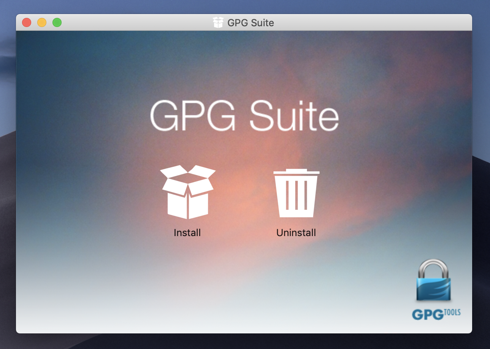Follow the steps installation
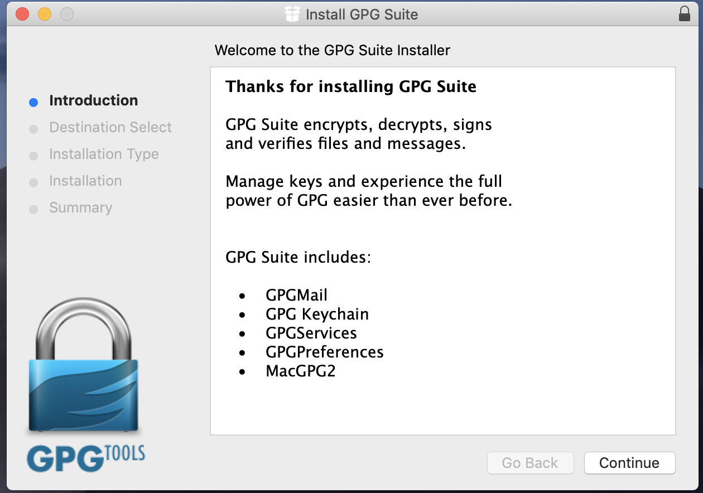Then a window like this is going to display. if it's not, open "Spotlight" and search for PGP Keychain. Here is where we are going to create our public and private keys. (Use the email that was given to you)
It’s very important to think in a secure passphare. We are going to need it later.
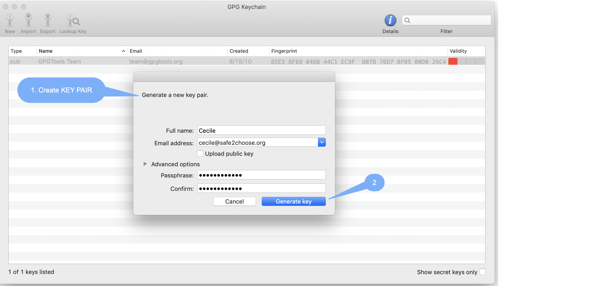Select your email account, then click on [Export]
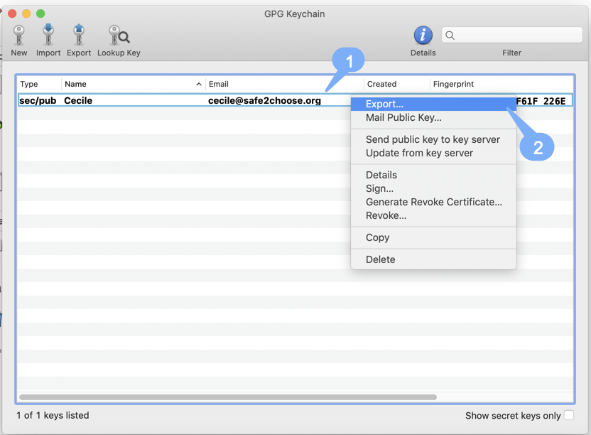A windows will open
After we create our pair of keys, we are going to get our public key file. It’s very importat to save it in a secure location.
In the PGP Keychain interface we need:
We need to give it a name and specify where we want to save it.
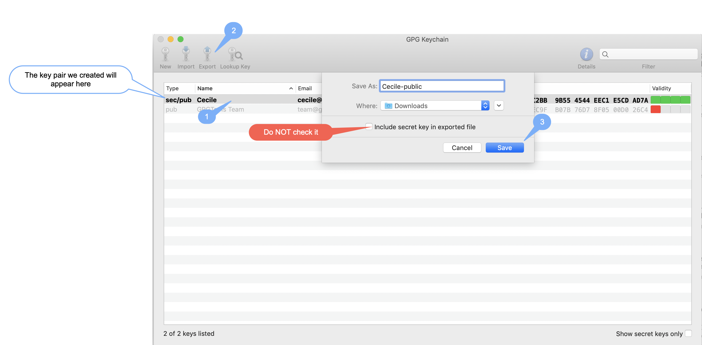We'll get a file like this.
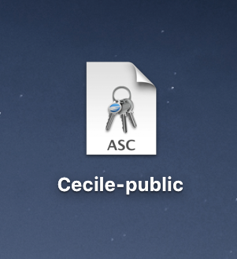After that, we need to download Thunderbird https://www.thunderbird.net/en-US/?lang=en-US
When the download is over, open the file and drag the the app to the Applications folder
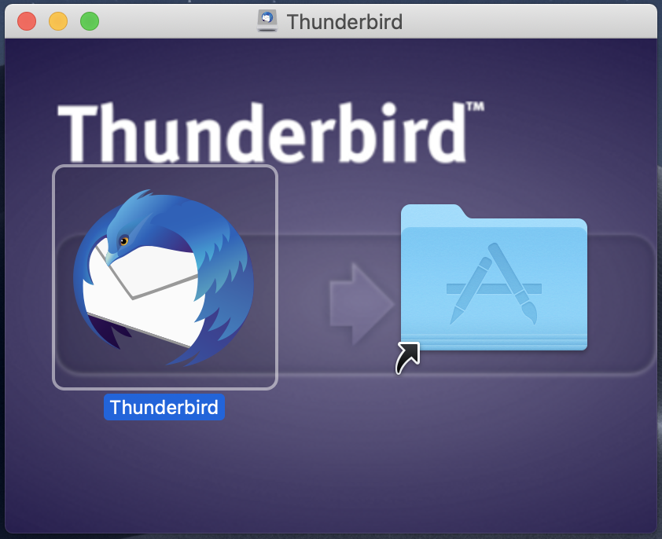A windows like thir will appear, Click on [Email]
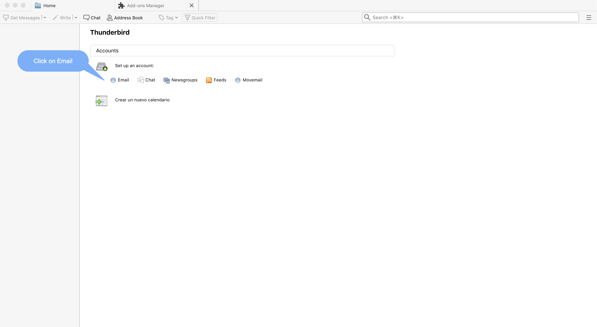[Skip this and use my existing email] to open the Mail Account Setup screen.
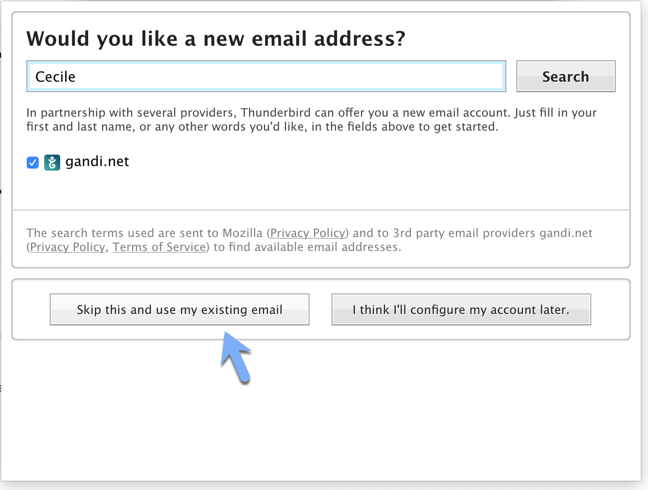Type the name, email address and password that correspond to the account you wish to access using Thunderbird. And clic on [Continue] Thunderbird will check the configuration of the email service you have entered.
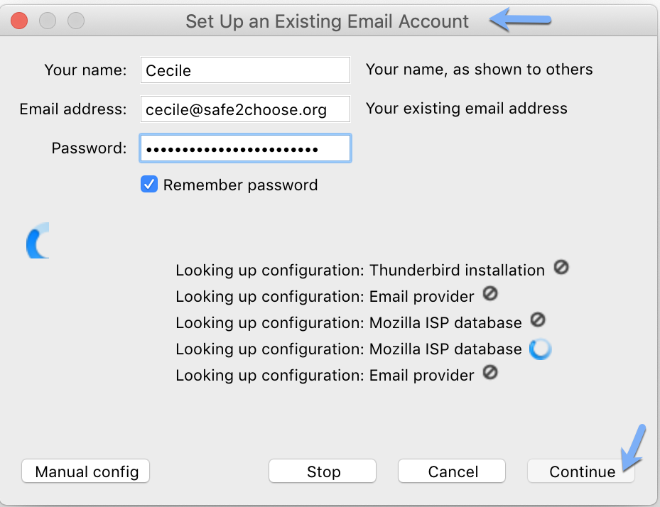After that, we select the [IMAP] option as in the next image and then, clic on [Done]
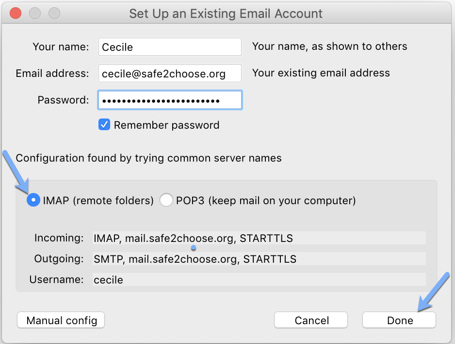Keep "IMAP (remote folders)" selected. IMAP stores the master copy of your email folders (including the Inbox, Drafts, Templates, Sent and Trash folders) on the server and makes a local copy on your device. This allows you to access the same messages from multiple devices while keeping your folders in sync. (POP, on the other hand, retrieves your messages from the server and stores them on the first device to which they are downloaded. This does not mean they are actually deleted from the server, but it does make it much more difficult to access your email from multiple devices.)
Important: Make sure that both the Incoming and Outgoing information shown on the screen above display SSL (Secure Sockets Layer) or STARTTLS (Start Transport Layer Security). Either one indicates that your email provider supports basic encryption.
Now, you’re ready to use Thunderbird!
Enigmail is a seamlessly integrated security add-on for Mozilla Thunderbird. It allows you to use OpenPGP to encrypt and digitally sign your emails and to decrypt and verify messages you receive. This guide will walk you through the steps of configuring enigmail so that you can create your new pair of keys or import your keys in case you already have them created
We need a complement for Thunderbird. For this, we need to go to the Thunderbird’s tools section and after, clic on [Adds-ons].
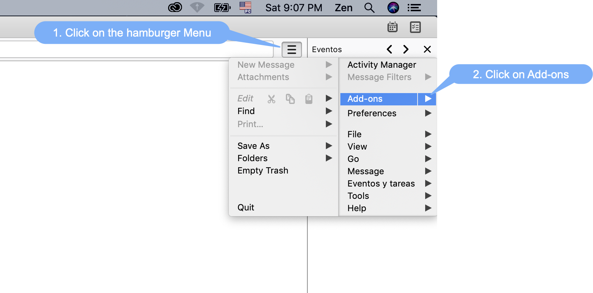A windows like this will open, then click on [Extensions], Then look for [Enigmail] in the searcher bar
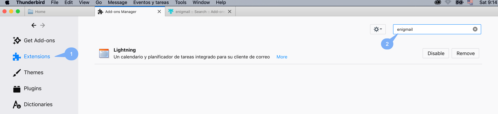Another windows will open showing [Enigmail], so click on the button [+ Add to Thunderbird] then [Install now]
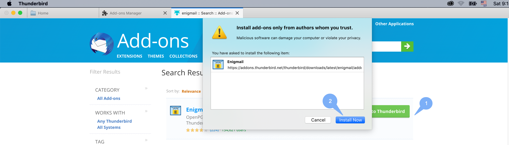When Thunderbird is done installing the add-on, it will let you know. It’s necessary to restart Thunderbird after the Enigmail’s installation. Clic on [Restart now]
Then if you click on [Extensions] will notice [Enigmail] has been installed
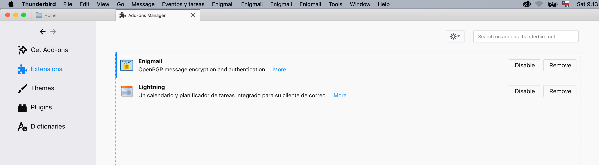Enigmail is available in the menu bar.
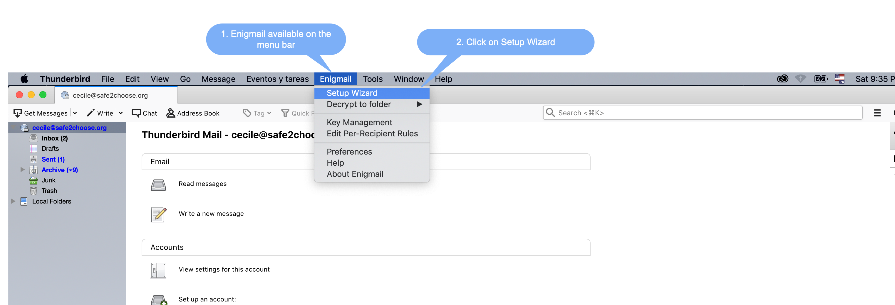To generate a GnuPG key pair, follow the steps below.
A window like this will open, Select [I prefer a standard configuration (recommended for beginners)] and click [Continue].
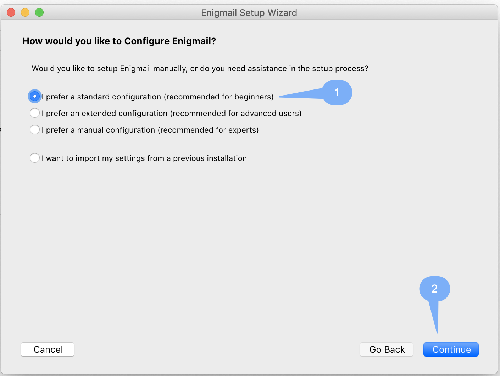After that, [Enigmal] is going to ask us automatically about what key we want to relate with our account. Select the key you just created before in [PGP Keychain], select the email and the click on [Continue]
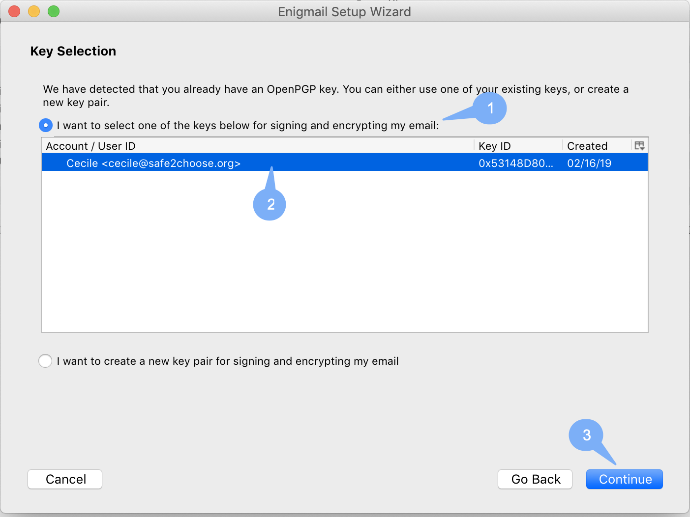The configuration is over. Clic on [Done]
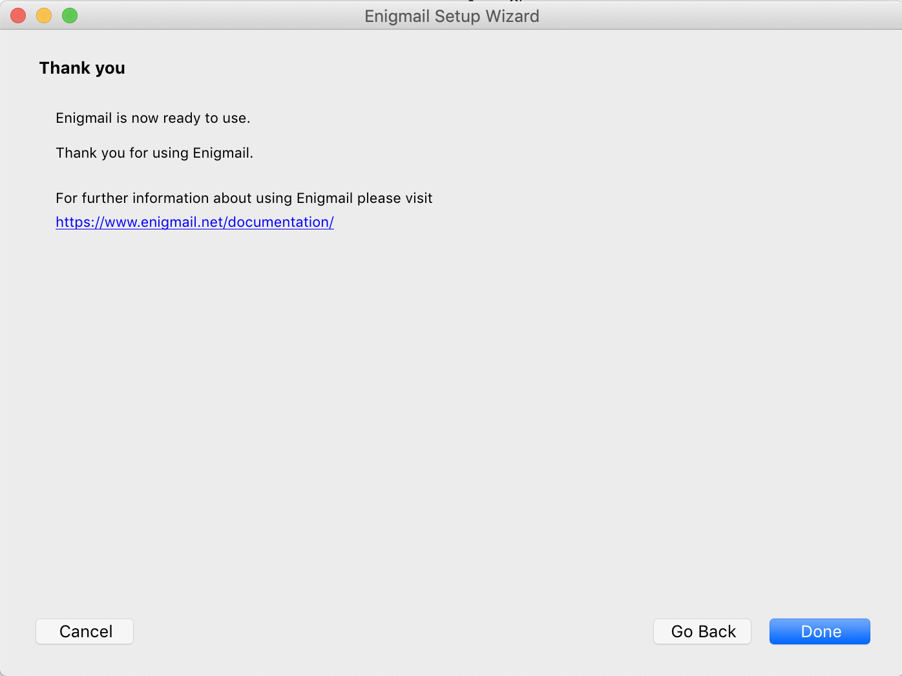Now, we can send encrypted messages.
[Enigmail] must be activated, if it's not, follow this steps
Make sure [Open PGP] Enigmail is activated
Note: When we receive an encrypted message, automatically PGPTools is going ask us for the passphrase we created to decrypt the message.
If you lose your key pair, you also lose access to your encrypted emails. You should therefore always create a backup copy of your key pairs.
This help article explains how to export an OpenPGP key from Enigmail for Thunderbird.
You should always backup your key pairs on a second medium such as a USB stick and store it in a safe place, you could use Nextcloud or Google Drive.